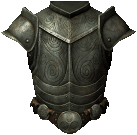
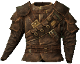

Armor
Armor is a type of apparel worn on the body to reduce incoming physical damage. In addition to offering protection from physical attacks, armor can be enchanted to grant additional types of protection, to bolster certain skills, or to increase stats such as Stamina, Health and Magic. Armor comes in several pieces which can be equipped independently of each other; these pieces are:
- Armor: covers your legs, chest and shoulders
- Boots: covers your feet and ankles
- Gauntlets: covers your hands up to your elbow
- Helmet: covers your head
- Shield: protect and block attacks
Beyond the different pieces, armor is broken up into two main types, Heavy Armor and Light Armor, both with their own associated skill trees. The two types are further broken up by several different materials and styles, which determine the quality of the armor. Higher quality armor provides better protection (but is generally heavier). Each of the two types of armor come with their own advantages and disadvantages.
|  | Heavy Armor offers far greater protection from physical attacks, but at the cost of producing more noise,
making stealth more difficult, and a higher weight which reduces the player's movement speed.
|
|  | While Light Armor provides less protection, it is far lighter which allows the player to move at a normal speed,
reduces the stamina cost of sprinting and produces far less noise, making it ideal for stealth.
|
Weapons
Weapons are the primary tool for dealing physical damage. They are essential tools of survival in Skyrim, and can be bought, looted, stolen, forged, or received as a reward. Skyrim offers a diverse range of weapon types which can be produced at different qualities. In Skyrim, weapons are broken up into three categories where they are governed by separate skills; One-Handed, Two-Handed and Archery.
- Daggers: the fastest of the one-handed weapons, but deal the least damage. They also receive bonuses when attacking while undetected.
- Maces: the slowest of the one-handed weapons, but deal the most damage.
- Swords: slightly slower than daggers, but deal more damage, though swords are faster and weaker than maces and axes..
- Axes: slower than swords, but deal more damage. They are faster than maces but deal less base damage.
- Battleaxes: requiring two hands, they are slower than greatswords, but deal more damage. They are faster than warhammers but deal less damage.
- Greatswords: the fastest of the two-handed weapons, but deal the least damage.
- Warhammers: the slowest of the two-handed weapons, but deal the most base damage.
- Bows: the most common ranged weapon with many types varying in damage, arrow speed, weight, fire rate, and value.
- Crossbows: stronger than most bows, but fire slower.
- Weapons appear in several different materials and styles, which determine the quality of the weapon. Higher quality
weapons do more damage (but are generally heavier). Which quality weapons you will find is generally determined based on
your character's level.
- Iron
- Steel
- Silver
- Orcish
- Dwaven
- Nord Hero
- Skyforge Steel
- Nordic
- Elven
- Glass
- Stalhrim
- Ebony
- Deadric
- Dragonbone